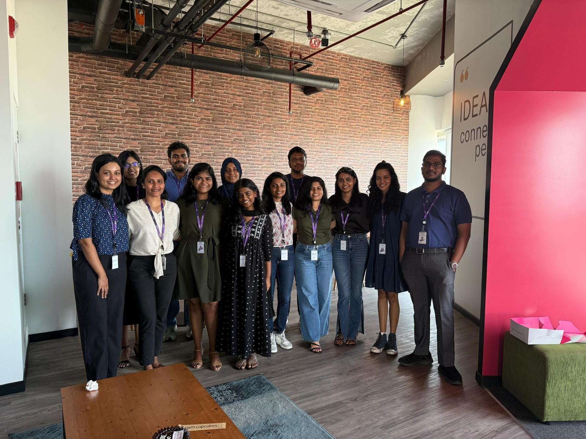
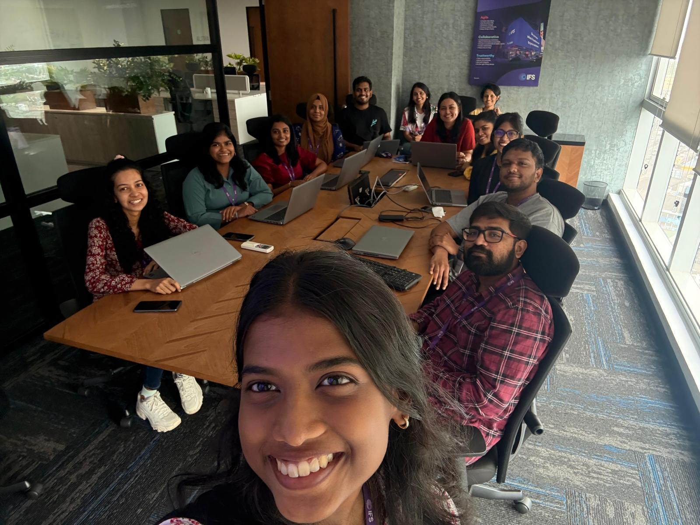
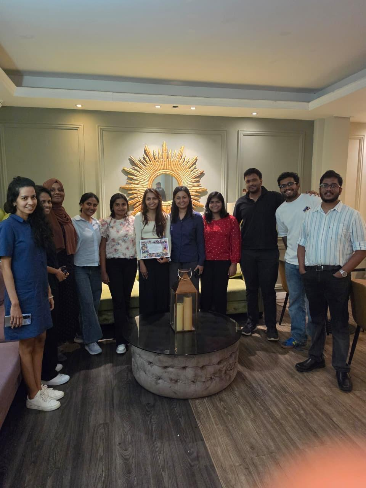

Jul 2025 - Jul 2026 · Hybrid
Senior Software Engineer
IFS
R&D CTO Office · Demo Platform
Worked within the R&D CTO Office on the Demo Platform team,
contributing to the design, delivery and continuous improvement of the platform supporting
demonstration capabilities for IFS Cloud. My work focused on release engineering, DevOps
automation, cloud platform engineering and AI-powered developer productivity.
- Coordinated release engineering for two major enterprise releases and multiple monthly
releases across 10+ engineering teams and multiple cloud environments, covering release
planning, deployment, validation, post-release verification and production support.
- Designed and implemented an automated documentation platform using Azure Static Web Apps,
MkDocs and CI/CD. Webhook-driven builds published documentation when content changed, while
isolated preview environments allowed teams to review updates before release.
- Added password-protected access for non-production documentation environments and automated
credential rotation, reducing manual security maintenance while keeping preview environments
easy to use.
- Reduced documentation deployment time from roughly four hours to under three minutes.
- Improved release quality through stronger deployment pipelines, increased unit-test coverage
with SonarQube, security remediation and code-quality standards.
- Performed root-cause analysis across cloud infrastructure, CI/CD pipelines and enterprise
applications, implementing longer-term solutions that improved platform reliability.
- Designed an AI-powered engineering assistant with Microsoft Copilot Studio using 100+
internal knowledge pages, contributing to a fivefold increase in documentation usage and
reducing time spent locating technical information.
- Contributed to solution design and technical decision-making by evaluating implementation
options, mitigating technical risks and balancing scalability, security and maintainability.
- Mentored junior engineers through code reviews, technical guidance and knowledge sharing,
while using GitHub Copilot and Cursor to support implementation, debugging, refactoring,
testing and documentation.
Azure Static Web AppsAzure FunctionsAzure Blob
StorageAzure Key
VaultCI/CDSonarQubeCopilot Studio



Product engineering · React · TypeScript
Contributed to the design, development and delivery of enterprise
software for the Xyicon platform, specialising in React, TypeScript, frontend architecture,
automated testing and desktop application integration. I worked with product owners, designers,
QA and engineers to deliver production features and improve the platform over time.
- Delivered 10+ production features by taking work from requirements and technical discussions
through development, testing and production deployment.
- Designed and implemented 50+ reusable React components, improving code reuse, UI consistency
and long-term maintainability.
- Developed a Revit add-in using C# and WPF, connecting desktop engineering workflows with
cloud-based applications.
- Improved application performance through API optimisation, caching strategies and
memory-usage improvements across key workflows.
- Resolved 100+ defects and enhancement requests, improving platform stability,
maintainability and user experience.
- Developed 100+ automated end-to-end tests and 20+ unit tests, reducing manual regression
testing from approximately three hours to 20 minutes.
- Participated in architecture discussions, code reviews, technical planning sessions and
Agile ceremonies, contributing to engineering standards and product quality.
ReactTypeScriptJavaScriptC#/.NETWPFCypressREST
APIs
Sep 2021 - Sep 2022 · Kandy, Sri Lanka
Temporary Instructor - Department of Computer Engineering
University of
Peradeniya
Teaching · Research · Leadership
Contributed to teaching, research and faculty-led engineering projects
while supporting undergraduate education and multidisciplinary software initiatives in the
Department of Computer Engineering.
- Delivered lectures, laboratory sessions, tutorials and practical classes, mentored student
projects and supported assessments.
- Extended final-year research into a peer-reviewed IEEE Access publication through
experimentation, software development, data analysis and technical writing.
- Contributed to faculty research and software initiatives through system implementation,
testing, debugging, analysis and technical documentation.
- Served in responsibilities including Project Manager, Scrum Master and Financial Assistant,
supporting planning, Agile practices, budgeting, stakeholder communication and execution.
- Helped establish the ESCAL MakerSpace, contributing to workstation design, resource
coordination, laboratory setup, technical operations and safety.
- Developed and updated course material, maintained student records, participated in academic
workshops and contributed to departmental initiatives including ACES Outline.
TeachingResearchSoftware
DevelopmentData AnalysisMixed RealityRobotics
Full-stack engineering · Agile
Contributed to enterprise software projects including Torus and Apex
Salary while gaining hands-on experience across the full software development lifecycle in an
Agile team.
- Implemented new features and enhancements for enterprise web applications based on business
and functional requirements.
- Worked across C#, .NET, .NET Core Web API, Entity Framework Core, React, TypeScript and
Vue.js.
- Designed data models, developed stored procedures and integrated REST APIs for application
workflows.
- Diagnosed and resolved application defects and designed unit tests to improve quality,
reliability and maintainability.
- Improved web and mobile interfaces while collaborating with cross-functional Scrum teams and
participating in Agile ceremonies and continuous delivery.
C#.NET
CoreReactTypeScriptVue.jsEntity
Framework CoreSQL